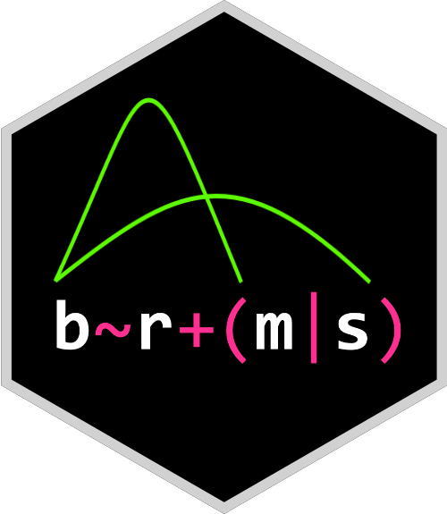

Overview
The brms package provides an interface to fit Bayesian generalized (non-)linear multivariate multilevel models using Stan, which is a C++ package for performing full Bayesian inference (see http://mc-stan.org/). The formula syntax is very similar to that of the package lme4 to provide a familiar and simple interface for performing regression analyses. A wide range of distributions and link functions are supported, allowing users to fit – among others – linear, robust linear, count data, survival, response times, ordinal, zero-inflated, hurdle, and even self-defined mixture models all in a multilevel context. Further modeling options include non-linear and smooth terms, auto-correlation structures, censored data, missing value imputation, and quite a few more. In addition, all parameters of the response distribution can be predicted in order to perform distributional regression. Multivariate models (i.e. models with multiple response variables) can be fitted, as well. Prior specifications are flexible and explicitly encourage users to apply prior distributions that actually reflect their beliefs. Model fit can easily be assessed and compared with posterior predictive checks, leave-one-out cross-validation, and Bayes factors.
Resources
- Introduction to brms (Journal of Statistical Software)
- Advanced multilevel modeling with brms (arXiv preprint)
- CRAN website (CRAN website of brms with documentation and vignettes)
- Blog posts (List of blog posts about brms)
- Ask a question (Stan Forums on Discourse)
- Open an issue (GitHub issues for bug reports and feature requests)
How to use brms
library(brms)As a simple example, we use poisson regression to model the seizure counts in epileptic patients to investigate whether the treatment (represented by variable Trt) can reduce the seizure counts and whether the effect of the treatment varies with the baseline number of seizures a person had before treatment (variable log_Base4_c). As we have multiple observations per person, a group-level intercept is incorporated to account for the resulting dependency in the data.
fit1 <- brm(count ~ log_Age_c + log_Base4_c * Trt + (1|patient),
data = epilepsy, family = poisson())The results (i.e. posterior samples) can be investigated using
summary(fit1)
#> Family: poisson
#> Links: mu = log
#> Formula: count ~ log_Age_c + log_Base4_c * Trt + (1 | patient)
#> Data: epilepsy (Number of observations: 236)
#> Samples: 4 chains, each with iter = 2000; warmup = 1000; thin = 1;
#> total post-warmup samples = 4000
#> ICs: LOO = NA; WAIC = NA; R2 = NA
#>
#> Group-Level Effects:
#> ~patient (Number of levels: 59)
#> Estimate Est.Error l-95% CI u-95% CI Eff.Sample Rhat
#> sd(Intercept) 0.55 0.07 0.43 0.71 672 1.01
#>
#> Population-Level Effects:
#> Estimate Est.Error l-95% CI u-95% CI Eff.Sample Rhat
#> Intercept 1.80 0.12 1.57 2.02 926 1.00
#> log_Age_c 0.47 0.38 -0.26 1.23 1107 1.00
#> log_Base4_c 0.89 0.15 0.60 1.18 855 1.00
#> Trt1 -0.35 0.16 -0.66 -0.03 1041 1.00
#> log_Base4_c:Trt1 0.33 0.22 -0.11 0.76 921 1.00
#>
#> Samples were drawn using sampling(NUTS). For each parameter, Eff.Sample
#> is a crude measure of effective sample size, and Rhat is the potential
#> scale reduction factor on split chains (at convergence, Rhat = 1).On the top of the output, some general information on the model is given, such as family, formula, number of iterations and chains. Next, group-level effects are displayed seperately for each grouping factor in terms of standard deviations and (in case of more than one group-level effect per grouping factor; not displayed here) correlations between group-level effects. On the bottom of the output, population-level effects (i.e. regression coefficients) are displayed. If incorporated, autocorrelation effects and family specific parameters (e.g. the residual standard deviation ‘sigma’ in normal models) are also given.
In general, every parameter is summarized using the mean (‘Estimate’) and the standard deviation (‘Est.Error’) of the posterior distribution as well as two-sided 95% credible intervals (‘l-95% CI’ and ‘u-95% CI’) based on quantiles. We see that the coefficient of Trt is negative with a completely negative 95%-CI indicating that, on average, the treatment reduces seizure counts by some amount. Further, we find little evidence that the treatment effect varies with the baseline number of seizures.
The last two values (‘Eff.Sample’ and ‘Rhat’) provide information on how well the algorithm could estimate the posterior distribution of this parameter. If ‘Rhat’ is considerably greater than 1, the algorithm has not yet converged and it is necessary to run more iterations and / or set stronger priors.
To visually investigate the chains as well as the posterior distributions, we can use the plot method. If we just want to see results of the regression coefficients of Trt and log_Base4_c, we go for
plot(fit1, pars = c("Trt", "log_Base4_c")) 
A more detailed investigation can be performed by running launch_shinystan(fit1). To better understand the relationship of the predictors with the response, I recommend the marginal_effects method:
plot(marginal_effects(fit1, effects = "log_Base4_c:Trt"))
This method uses some prediction functionality behind the scenes, which can also be called directly. Suppose that we want to predict responses (i.e. seizure counts) of a person in the treatment group (Trt = 1) and in the control group (Trt = 0) with average age and average number of previous seizures. Than we can use
newdata <- data.frame(Trt = c(0, 1), log_Age_c = 0, log_Base4_c = 0)
predict(fit1, newdata = newdata, re_formula = NA)
#> Estimate Est.Error 2.5%ile 97.5%ile
#> [1,] 6.09225 2.577091 2 12
#> [2,] 4.32000 2.080789 1 9We need to set re_formula = NA in order not to condition of the group-level effects. While the predict method returns predictions of the responses, the fitted method returns predictions of the regression line.
fitted(fit1, newdata = newdata, re_formula = NA)
#> Estimate Est.Error 2.5%ile 97.5%ile
#> [1,] 6.079223 0.7220677 4.799582 7.554752
#> [2,] 4.301697 0.4801110 3.408425 5.305245Both methods return the same etimate (up to random error), while the latter has smaller variance, because the uncertainty in the regression line is smaller than the uncertainty in each response. If we want to predict values of the original data, we can just leave the newdata argument empty.
Suppose, we want to investigate whether there is overdispersion in the model, that is residual variation not accounted for by the response distribution. For this purpose, we include a second group-level intercept that captures possible overdispersion.
fit2 <- brm(count ~ log_Age_c + log_Base4_c * Trt + (1|patient) + (1|obs),
data = epilepsy, family = poisson())We can then go ahead and compare both models via approximate leave-one-out cross-validation.
LOO(fit1, fit2)
#> LOOIC SE
#> fit1 1340.63 72.09
#> fit2 1190.47 27.65
#> fit1 - fit2 150.16 53.83Since smaller LOOIC values indicate better fit, we see that the model accounting for overdispersion fits substantially better. The post-processing methods we have shown so far are just the tip of the iceberg. For a full list of methods to apply on fitted model objects, type methods(class = "brmsfit").
FAQ
How do I install brms?
To install the latest release version from CRAN use
install.packages("brms")The current developmental version can be downloaded from github via
if (!require("devtools")) {
install.packages("devtools")
}
devtools::install_github("paul-buerkner/brms", dependencies = TRUE)Because brms is based on Stan, a C++ compiler is required. The program Rtools (available on https://cran.r-project.org/bin/windows/Rtools/) comes with a C++ compiler for Windows. On Mac, you should install Xcode. For further instructions on how to get the compilers running, see the prerequisites section on https://github.com/stan-dev/rstan/wiki/RStan-Getting-Started.
I am new to brms. Where can I start?
Detailed instructions and case studies are given in the package’s extensive vignettes. See vignette(package = "brms") for an overview. For documentation on formula syntax, families, and prior distributions see help("brm").
How do I cite brms?
Please cite one or more of the following publications:
- Bürkner P. C. (2017). brms: An R Package for Bayesian Multilevel Models using Stan. Journal of Statistical Software. 80(1), 1-28. doi:10.18637/jss.v080.i01
- Bürkner P. C. (in press). Advanced Bayesian Multilevel Modeling with the R Package brms. The R Journal.
Where do I ask questions, propose a new feature, or report a bug?
Questions can be asked on the brms-users google group. To propose a new feature or report a bug, please open an issue on GitHub.
How can I extract the generated Stan code?
If you have already fitted a model, just apply the stancode method on the fitted model object. If you just want to generate the Stan code without any model fitting, use the make_stancode function.
Can I avoid compiling models?
When you fit your model for the first time with brms, there is currently no way to avoid compilation. However, if you have already fitted your model and want to run it again, for instance with more samples, you can do this without recompilation by using the update method. For more details see help("update.brmsfit").
What is the difference between brms and rstanarm?
The rstanarm package is similar to brms in that it also allows to fit regression models using Stan for the backend estimation. Contrary to brms, rstanarm comes with precompiled code to save the compilation time (and the need for a C++ compiler) when fitting a model. However, as brms generates its Stan code on the fly, it offers much more flexibility in model specification than rstanarm. Also, multilevel models are currently fitted a bit more efficiently in brms. For detailed comparisons of brms with other common R packages implementing multilevel models, see vignette("brms_multilevel") and vignette("brms_overview").